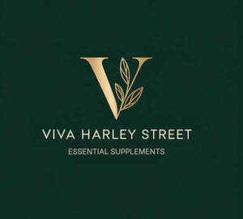

Trade Mark Journal No.2025/042 17 October 2025
UK00004274463 7 October 2025 (5)

- Class 5
- Vitamin supplements; Nutritional supplements; Dietary supplements; Probiotic supplements; Herbal supplements; Homeopathic supplements; Calcium supplements; Anti-oxidant supplements; Protein supplements; Dietary supplements consisting of vitamins; Prebiotic supplements; Food supplements; Mineral dietary supplements; Zinc dietary supplements; Mineral nutritional supplements; Propolis dietary supplements; Acai powder dietary supplements; Liquid dietary supplements; Dietary and nutritional supplements; Vitamin supplements for animals; Vitamin and mineral supplements; Protein dietary supplements; Linseed dietary supplements; Liquid nutritional supplements; Liquid vitamin supplements; Enzyme dietary supplements; Dietary supplements for animals; Dietary supplements for pets; Anti-oxidant food supplements; Dietary food supplements; Alginate dietary supplements; Albumin dietary supplements; Liquid herbal supplements; Wheat dietary supplements; Vitamin and mineral supplements for pets; Dietary supplements for humans; Pollen dietary supplements; Glucose dietary supplements; Vitamin and mineral food supplements; Protein powder dietary supplements; Dietary supplements in powder form; Mineral dietary supplements for animals; Dietary supplements with a cosmetic effect; Nutritional supplements for veterinary use; Dietary supplements for medical use; Mineral dietary supplements for humans; Food supplements for sportsmen; Nutritional supplements consisting primarily of magnesium; Protein supplements for animals; Dietary supplements consisting primarily of magnesium; Vitamin supplement patches; Soy protein dietary supplements; Health-aid foods supplements containing ginseng; Health food supplements made principally of vitamins; Vitamin preparations in the nature of food supplements; Dietary supplement drinks; Dietary supplements and dietetic preparations; Nutritional supplements consisting of fungal extracts; Nutritional supplements consisting primarily of calcium; Folic acid dietary supplements; Calcium tablets as a food supplement; Dietary supplements consisting primarily of calcium; Nutritional supplements consisting primarily of zinc; Dietary supplements for controlling cholesterol; Nutritional supplements consisting primarily of iron; Herbal dietary supplements for persons special dietary requirements; Food supplements for veterinary use; Dietary supplements consisting primarily of iron; Food supplements for dietetic use; Nutritional supplement energy bars; Dietary supplements promoting fitness and endurance; Multivitamins; Dietary supplement drink mixes; Health food supplements made principally of minerals; Food supplements for medical purposes; Fitness and endurance supplements; Food supplements for non-medical purposes; Food supplements in liquid form; Wheat germ dietary supplements; Dietary supplements for pets in the nature of a powdered drink mix; Royal jelly dietary supplements; Health food supplements for persons with special dietary requirements; Dietary supplements for humans not for medical purposes; Dietary supplements for human beings; Vitamins and vitamin preparations; Multi-vitamin preparations; Food supplements consisting of trace elements; Powdered nutritional supplement energy drink mix; Powdered fruit-flavored dietary supplement drink mix; Preparations of vitamins; Antioxidant pills; Dietary supplemental drinks; Multivitamin preparations.
MALTZ MEDICAL CENTRE LIMITED